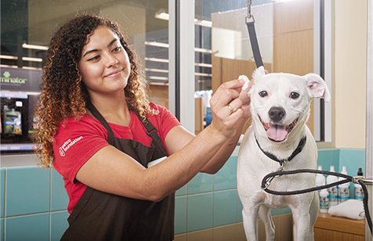

THIS IS ZIJIAN ZHANG
As a combination of marketer, data analyst, and retailing insider, I’m passionate about
using data to develop meaningful insight and to help with business decision.
Technology
A/B Test, Data Mining, Data Visualization, Data Cleaning, Multivariate Model, Cluster Analysis(HCA, kNN, K-Mean),
Digital Marketing, RFM Analysis, Multi-Touch Attribution Analysis, Marketing Mix Analysis, SARIMA Analysis,
Regression Analysis(Linear, LASSO, Logistic), Classification Tree, Neural Network
Programming Skills
MySQL, Python (Pandas, Numpy, Sklearn), R, Tableau, Stata, Power BI, SPSS,
Salesforce, Google Analytics, Advanced Excel (Vlookups, Pivot Table)
Interests
Motorsport, Photographing, Cooking, Snowboarding, Camping, Hiking, Traveling, Sailing
Nov 2021
Data Mining
Cardiovascular Disease
Applied Logistic Regression, k Nearest-Neighbor, Classification Tree, and Neural Network model to the cardiovascular dataset to train the model and predict the probability of patients to develop cardiovascular disease. Use the result to help with the business and healthcare decision.
resource: https://www.kaggle.com/sulianova/cardiovascular-disease-dataset
Oct 2021
LASSO Regression
Airline Tickets Price

Predicted the flight tickets price for a major airline trying to compete with Southwest on some newly opened routes base on 10 variables
Jul 2021
TATA Eight O'Clock Coffee Analysis Case
Conducted SARIMA analysis and Multi Touch Attribution to analyzed EOC coffee’s sales data across 9 different retailers and google analytics data. Identify multiple factors that affect sales and how effective current distribution and customer acquisition strategy is. Identify the trend shift in current US coffee market. Launched a survey and used survey result to help with choose EOC’s new marketing channel and new digital marketing strategies.
Oct 2020
new BMW i4
Zipcode marketing analysis
Performed Hierarchical Cluster Analysis to segment Texas zipcodes based on demographic and transportation data. Compared the results from Furthest neighbor and Ward methods. And identifies 151 zipcodes for marketing campaign.
Nov 2020
Customer segmentaion & multilinear regression
Petco customer groups

Applied RFM model on Petco’s transactional data and used HCA and K-Mean analysis to segment existing customers. Targeting promising segments of customers for marketing campaigns and drive revenue from retail sales to VitalCare plan and PetCoach digital platform. In the second part, performed multilinear regression to predict which behaviors will affect future profitability in each segments.
{kind=link}